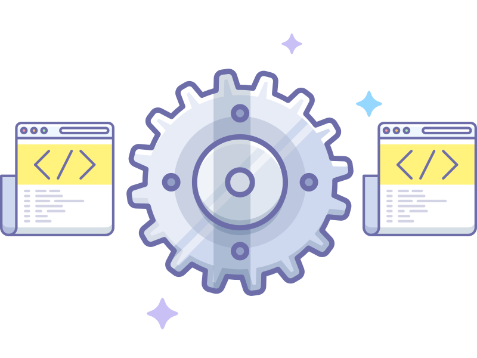
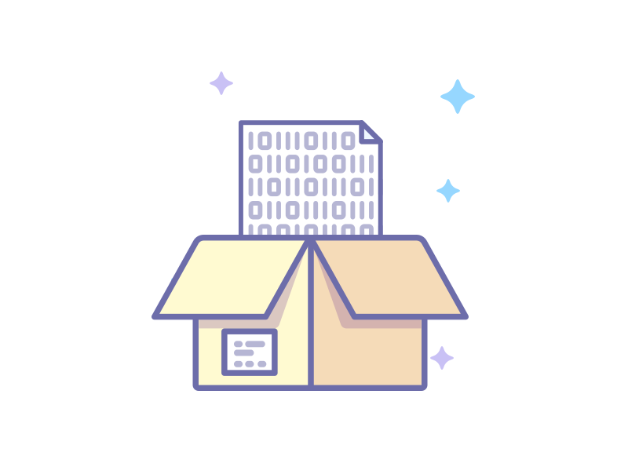
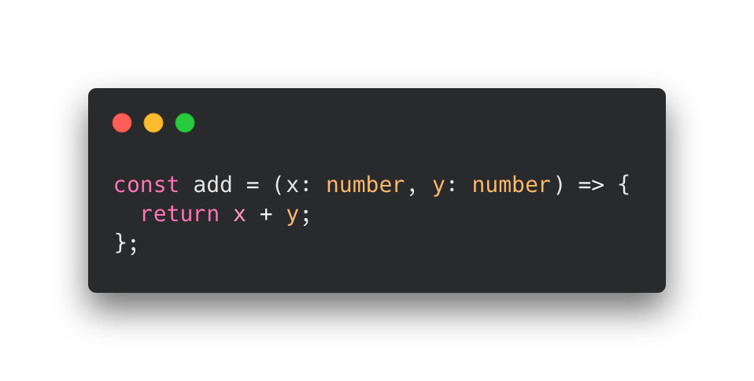
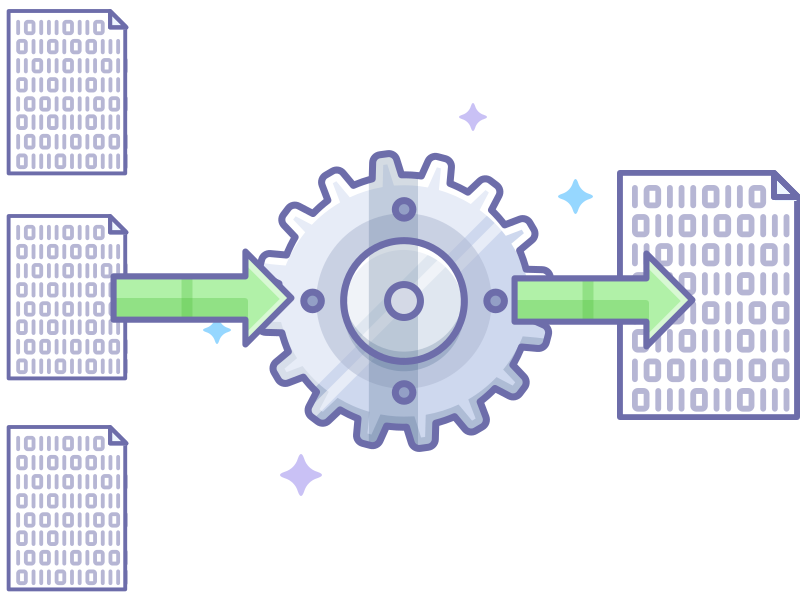
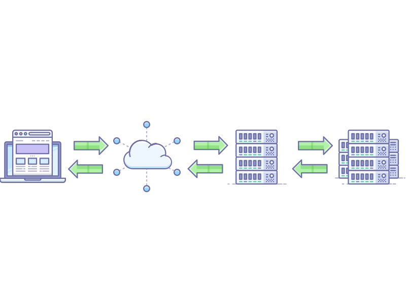
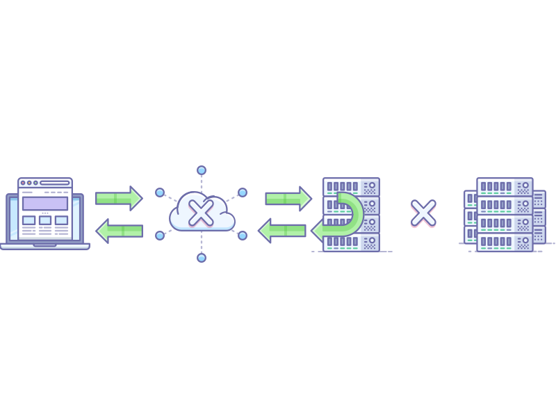

CASCADIAJS
Kristofer Joseph
Co-founder @begin
You
might
not need
a build step
What is a build step?
Transpiling
Compiling
source code
to
source code

No
Module System

TypeScript

End-user benefits?
Not entirely clear 🤷🏽♀️
Bundling

End-user benefits?
Page load performance 📈
Fingerprinting
C.R.E.A.M
Cache Rules Everything Around Me


Invalidate cache?
Not quite 😬
Back to
Fingerprinting
main.js
→
main-
h45h
.js
What can we rely on?
Constant change.
Progressive Bundling
Progressive Bundling consists of
Bundle
Fingerprint
Cache
Redirect
Go to slide: